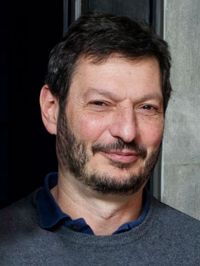

|
Certified Data Driven Control
Speaker
Mario Sznaier
Affiliation
Dennis Picard Trustee Professor
Department of Electrical and Computer Engineering
Northeastern University
Abstract
This talk covers the fundamentals of certified data-driven control. In its simplest form, the problem can be stated as:
given data extracted from noisy trajectories of an unknown system and a few priors about it structure, design a state feedback controller guaranteed to stabilize all possible systems that could have generated the observed data. We will show that both for linear and non-linear systems this problem can be recast into a tractable convex optimization form by exploiting duality. These results will be illustrated by designing controllers that minimize the worst case, over the consistency set, of the H-2, H-infinity and L-1 gains of the closed loop systems. The second portion of the talk covers extensions of these tools to more complex scenarios, including switched systems and guaranteeing that the closed loop system does not enter an unsafe set, even in the presence of bounded disturbances. Finally, we will briefly comment on extensions of these results to the output feedback case.
Bio
|
 |
Mario Sznaier is currently the Dennis Picard Chaired Professor at the Electrical and Computer Engineering Department, Northeastern University, Boston. Prior to joining Northeastern University, Dr. Sznaier was a Professor of Electrical Engineering at the Pennsylvania State University and also held visiting positions at the California Institute of Technology. His research interest include control oriented machine learning, robust identification and control of hybrid systems, and robust optimization. Dr. Sznaier is currently serving as chair of the IFAC Technical Committee on Robust Control, Founding Editor in Chief for the Control and AI section of the journal Frontiers in Control Engineering, and General Chair of the 2024 Symposium on Systems Identification (SysId2024). Past recent service include Program Chair of the 2017 IEEE Conf. on Decision and Control, General Chair of the 2016 IEEE Multi Systems Conference, and Chair of the IEEE Control Systems Society Technical Committee on Computational Aspects of Control Systems Design (2013-2017). He is a distinguished member of the IEEE Control Systems Society and a Fellow of the IEEE for his contributions to robust control, identification and dynamic vision.
|
|